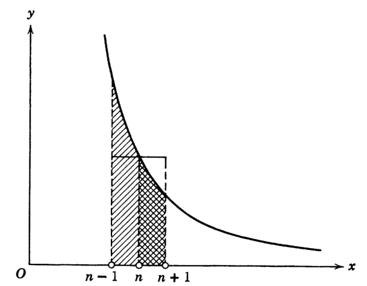

§7.1b 已介绍了判断条件收敛时很有用的莱布尼茨判别法。以下只讨论有关绝对收敛的准则。
a. 比较判别法。优级数
这类判别都是把所研究的级数同另一个容易判断敛散性的级数比较。一般的比较判别法如下：若 b1,b2,… 均为正数，级数 ∑ν=1∞bν 收敛，且对每个 n 都有 ∣an∣≤bn，则 ∑n=1∞an 绝对收敛。
用柯西准则来证明，几乎是一目了然的。若 m≥n，则
∣an+⋯+am∣≤∣an∣+⋯+∣am∣≤bn+⋯+bm.由于 ∑bn 收敛，只须 m,n 足够大，最右端就可以任意小。因此左端也可以任意小，由柯西准则知给定级数收敛。同一论证也适用于 ∣an∣ 的级数，故收敛是绝对的。
以下命题的类似证明留给读者：若 ∣an∣≥bn>0 而 ∑n=1∞bn 发散，则 ∑n=1∞an 一定不绝对收敛。两种情形中的正项级数 ∑bn，有时分别称为 ∑an 的优级数和劣级数。
b. 与几何级数比较以判别收敛
应用比较判别法时，最常用的优级数是几何级数。立即得到下列定理：
定理。 若从某一项起有
∣an∣<cqn,(3)其中常数 c>0 与 n 无关，q 是小于 1 的固定正数，则 ∑n=1∞an 绝对收敛。
比值判别法与根值判别法。 通常把上述准则表述成下列较弱形式之一：若从某一项起有
anan+1<q,(4a)其中 0<q<1 与 n 无关，或从某项起有
n∣an∣<q(4b)（其中同样 0<q<1），则 ∑an 绝对收敛。特别是，只要满足下列任一关系，相应的判别条件便成立：
n→∞limanan+1=k<1,(5a)n→∞limn∣an∣=k<1.(5b)证明如下。设 n>n0 时满足比值判别法 (4a)。简记 bm=an0+m+1。则 ∣b1∣<q∣b0∣，∣b2∣<q∣b1∣<q2∣b0∣，依此类推，∣bm∣<qm∣b0∣（m>0）。于是取 c=q−n0−1∣b0∣，对其后的各项便有 ∣an∣<cqn，结论得证。至于根值判别法 (4b)，立即有 ∣an∣<qn。最后，为证明 (5)，任取满足 k<q<1 的数 q。从某个 n0 起，相应的比值或根值与 k 相差小于 q−k，故各自满足 (4a) 或 (4b)，结论随即成立。
这里需要强调，由 ∣an∣<cqn 引出的四种判别形式 (4a, b)、(5a, b) 并不全都等价，也并不都与原准则等价。后面的例子会说明，满足其中一个条件的级数未必满足其余条件。
为了完整起见，再指出几条足以判明发散的条件。若从某一项起 ∣an∣>c，其中 c>0；或从某项起 n∣an∣>1；或 limn→∞∣an+1/an∣=k、limn→∞n∣an∣=k 两者之一成立，且 k>1，则级数一定发散。因为这时通项都不可能趋于零，连条件收敛也不可能。
上述收敛判别法给出的都是充分条件，并非必要条件。有些绝对收敛的级数不满足这些条件。特别是，如果只知道 lim∣an+1/an∣=1 或 limn∣an∣=1，便不能判断敛散性。例如 ∑n=1∞1/n 的比值和根值极限都是 1，它却发散（第 513 页）。很快会看到，同样满足这两个关系的级数 ∑n=1∞1/n2 则收敛。
例如，对级数 q+2q2+3q3+⋯+nqn+⋯，有
n→∞limn∣an∣=∣q∣n→∞limnn=∣q∣,n→∞limanan+1=∣q∣n→∞limnn+1=∣q∣（比值式取 q=0）。即使只用较弱的形式 (5)，比值判别法和根值判别法都能说明 ∣q∣<1 时级数收敛。
另一方面，考察级数
1+2q+q2+2q3+⋯+q2n+2q2n+1+⋯.在 21≤∣q∣<1 时，比值判别法就用不上了，因为 ∣2q2n+1/q2n∣=2∣q∣≥1。根值判别法却立即给出 limn∣an∣=∣q∣，所以 ∣q∣<1 时收敛。当然，此例也可以直接看出来。
c. 与积分比较
现在讨论一种颇不相同的判别方法。我们选取一个典型而又特别简明、重要的例子，即
n=1∑∞nα1=1+2α1+3α1+⋯,这里 an=1/nα，α>0。画出 y=1/xα，在 x 轴上标出整数横坐标 1,2,…。先在区间 n−1≤x≤n（n>1）上作高为 1/nα 的矩形，与同一区间上曲线下的面积比较（见图 7.2 的阴影部分）。再在 n≤x≤n+1 上作同样高的矩形，同样与曲线下的面积比较（图中交叉阴影部分）。前一曲边图形的面积大于矩形，后一图形则小于矩形，换句话说，
∫nn+1xαdx<nα1<∫n−1nxαdx.
图 7.2 级数与积分的比较。
原注 1（第 524 页） 关于这一点，亦见原书第 505 页的附录。
左侧不等式分别取 n=1,2,…,m，右侧取 n=2,3,…,m，求和，即得第 m 个部分和 sm=∑n=1m1/nα 的估计
∫1m+1xαdx<sm<1+∫1mxαdx.(6)随 m 增大，∫1mdx/xα 在 α>1 时趋于有限极限，在 α≤1 时无限增大。因此单调数列 sm 在前一情形有界，在后一情形无限增大。于是得到：
定理。 倒数幂级数 ∑n=1∞n−α=1/1α+1/2α+1/3α+⋯ 收敛的充要条件是 α>1。
取 α=1 便又得到调和级数的发散性。类似地，1/12+1/22+1/32+⋯ 和 1/13+1/23+1/33+⋯ 收敛，而 1/1+1/2+1/3+⋯ 发散。对于 α>1，收敛级数 ∑ν=1∞1/να 常用作比较级数。例如，只要 ∣cν∣ 有一个与 ν 无关的固定上界，∑ν=1∞cν/να 就绝对收敛。
欧拉常数。 在估计 (6) 中取 α=1，立即可知数列
Cn=1+21+31+⋯+n1−logn=sn−logn>log(n+1)−logn>0有下界。从不等式
n+11<∫nn+1xdx=log(n+1)−logn=n+11+Cn−Cn+1又看出它单调递减，因而必有极限
n→∞limCn=n→∞lim(1+21+31+⋯+n1−logn)=C.C=0.5772… 称为欧拉常数。分析学中另一些重要的特殊数，如 π 和 e，都有其他构成规律简单的表达式；欧拉常数却一直没有找到同样简单的表示。C 究竟是有理数还是无理数，迄今仍不知道。